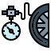
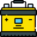
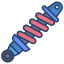
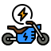

Nuestros Servicios
Mantenimiento General
Revisión y ajuste para evitar fallos futuros.
Cambio de Aceite
Sustitución de aceite para un motor más eficiente.

Alineación y Balanceo
Ajuste preciso para una conducción suave.

Cambio de Batería
Sustitución de batería para un arranque confiable.

Revisión de Suspensión
Ajuste y reparación de amortiguadores.

Cambio de Neumáticos
Sustitución de llantas para un mejor agarre.
Pintura y Detallado
Personalización estética de tu moto.
Revisión de Cadena
Ajuste y lubricación de la cadena.

Revisión Eléctrica
Diagnóstico y solución de fallas eléctricas.
Cambio de Filtros
Sustitución de filtro de aire y aceite.
Revisión de Embrague
Ajuste y cambio del sistema de embrague.
Revisión de Luces
Verificación y cambio de luces.